סיפורי תנאים וגדולי ישראל
סיפורי התנאים במצגות ובכתב, סיפורי צדיקים ואמונה וקטלוגי סיפורים
95 פריטים
קטלוגי סיפורים (2)
🔎 למצוא חומר לשיעור על רב מסוים. כל החומרים – סיפורים, מצגות, דפי עבודה, משחקים ומערכי שיעור – על כ-190 גדולי ישראל, מהזוגות והתנאים ועד הדורות האחרונים, מסודרים לפי תקופה ודמות, עם חיפוש, סינון ודף לכל רב. ולצידו ספר הסיפורים „כה עשו תנאינו” (www.kol-toda.co.il/tanaim).

כה עשו תנאינו – סיפורי התנאים והאמוראים לפי סדר הדורות
ספר הסיפורים: מאות סיפורי התנאים והאמוראים לפי סדר הדורות, ולכל סיפור מצגת, הסיפור לקריאה, מדריך למורה, דף עבו…

גדולי ישראל לפי סדר הדורות – קטלוג חומרים
כ-4,750 חומרים על כ-190 גדולי ישראל – מהזוגות והתנאים, דרך האמוראים, הגאונים, הראשונים והאחרונים ועד הדורות הא…
סיפורי התנאים (23)
📖 לספר ולהציג סיפור של התנאים. סיפורים, מצגות ומשחקים על התנאים, כל אחד בנפרד. את הספר כולו, „כה עשו תנאינו”, תמצאו בשורה הראשונה (www.kol-toda.co.il/tanaim).
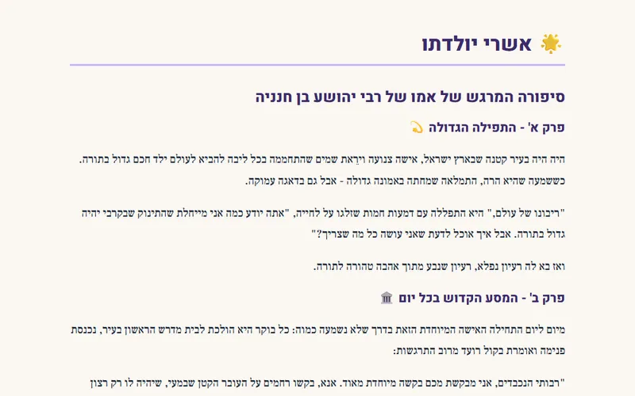
אשרי יולדתו
סיפורה המרגש של אמו של רבי יהושע בן חנניה
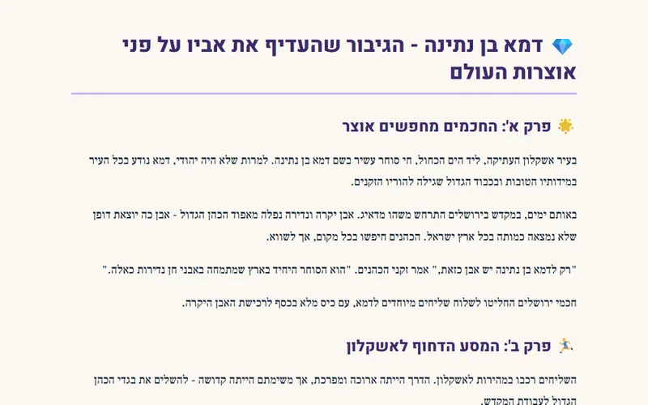
דמא בן נתינה - הגיבור שהעדיף את אביו על פני אוצרות העולם
בעיר אשקלון העתיקה, ליד הים הכחול, חי סוחר עשיר בשם דמא בן נתינה. למרות שלא היה יהודי, דמא נודע בכל העיר במידו…
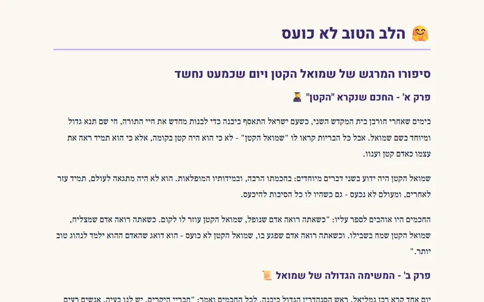
הלב הטוב לא כועס
סיפורו המרגש של שמואל הקטן ויום שכמעט נחשד
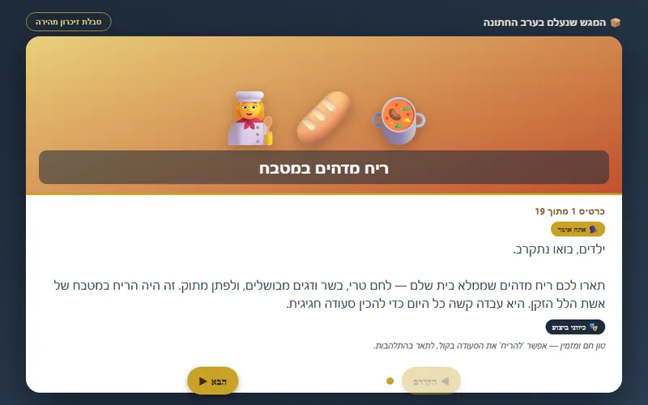
המגש שנעלם בערב החתונה
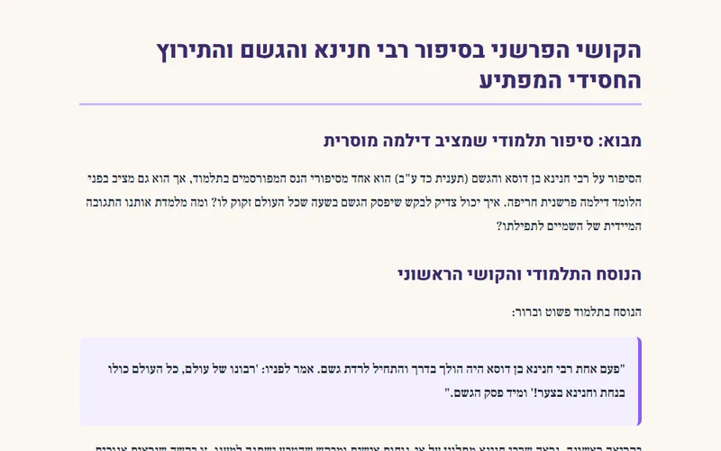
הקושי הפרשני בסיפור רבי חנינא והגשם והתירוץ החסידי המפתיע
הסיפור על רבי חנינא בן דוסא והגשם (תענית כד ע"ב) הוא אחד מסיפורי הנס המפורסמים בתלמוד, אך הוא גם מציב בפני הלו…
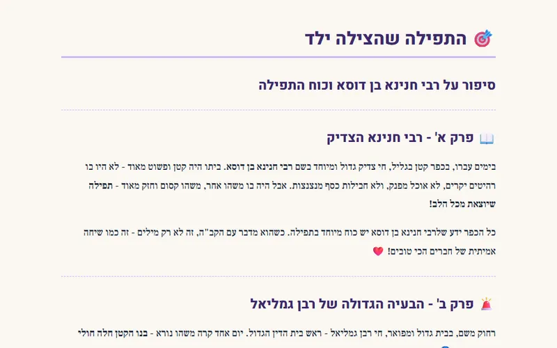
התפילה שהצילה ילד
סיפור על רבי חנינא בן דוסא וכוח התפילה
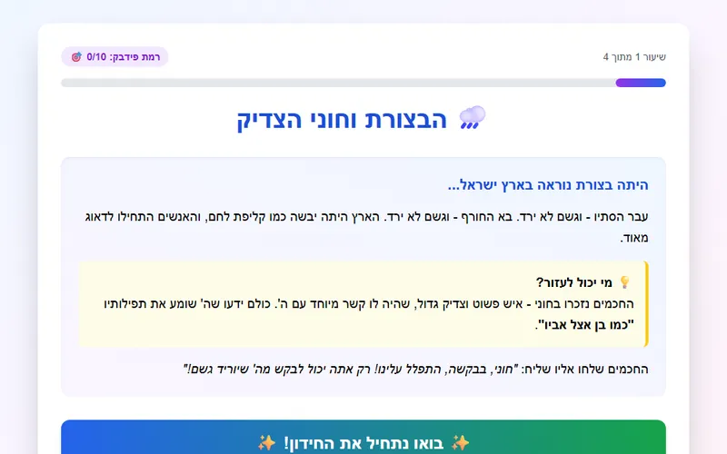
חוני המעגל – משחק
>היתה בצורת נוראה בארץ ישראל...</p> <p>עבר הסתיו - וגשם לא ירד. בא החורף - וגשם לא ירד. הארץ היתה יב…
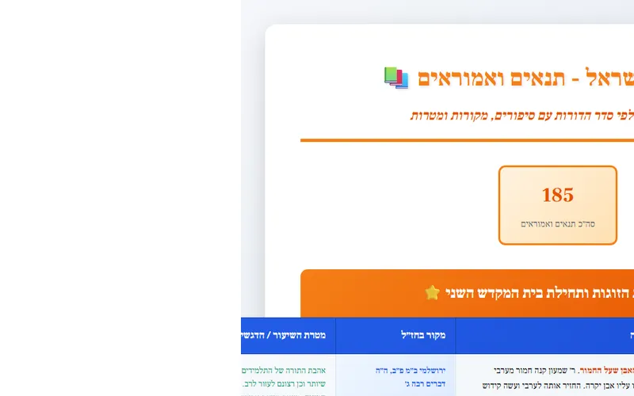
טבלת תנאים ואמוראים - גדולי ישראל
טבלה זו נוצרה מתוך החומר של "גדולי ישראל - כיתות א׳-ג׳"
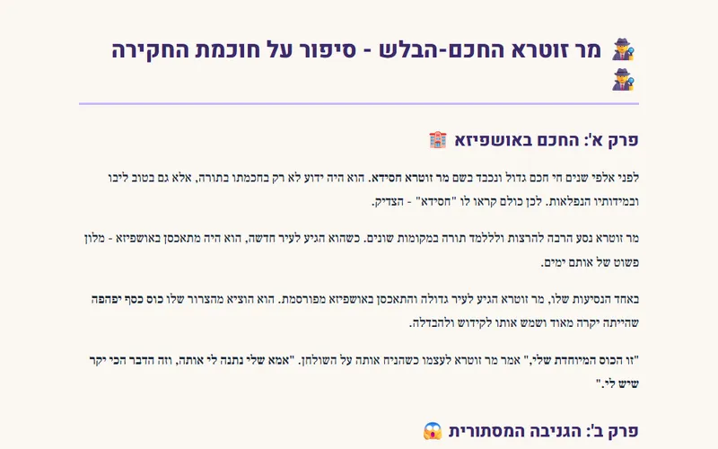
מר זוטרא החכם-הבלש - סיפור על חוכמת החקירה
לפני אלפי שנים חי חכם גדול ונכבד בשם מר זוטרא חסידא. הוא היה ידוע לא רק בחכמתו בתורה, אלא גם בטוב ליבו ובמידות…
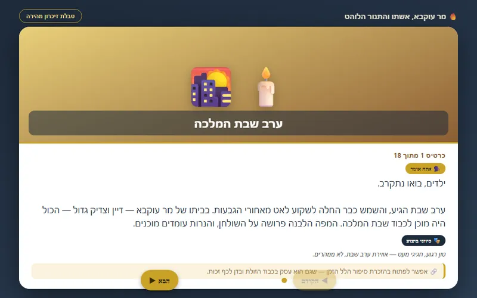
מר עוקבא, אשתו והתנור הלוהט
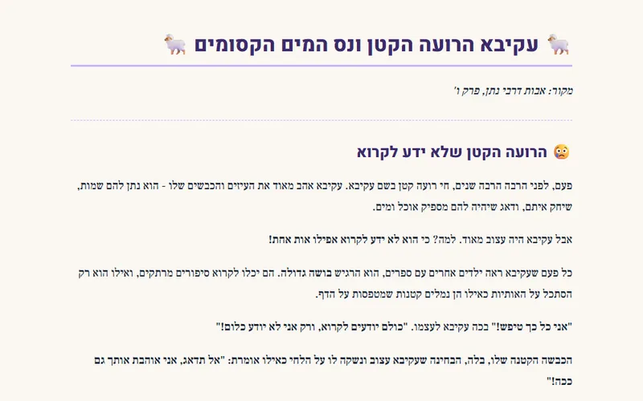
עקיבא הרועה הקטן ונס המים הקסומים
מקור: אבות דרבי נתן, פרק ו'
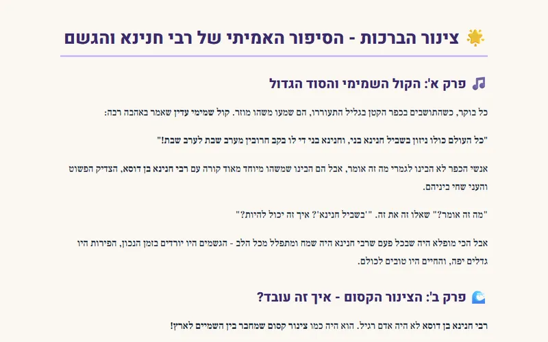
צינור הברכות - הסיפור האמיתי של רבי חנינא והגשם
כל בוקר, כשהתושבים בכפר הקטן בגליל התעוררו, הם שמעו משהו מוזר. קול שמימי עדין שאמר באהבה רבה:
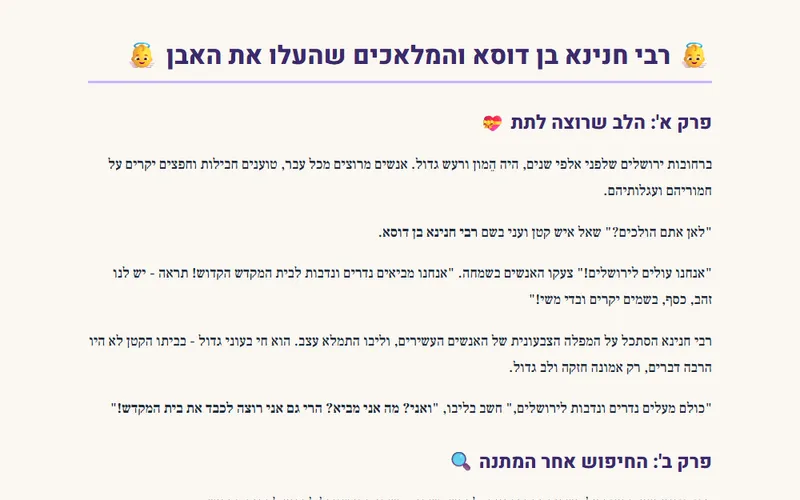
רבי חנינא בן דוסא והמלאכים שהעלו את האבן
ברחובות ירושלים שלפני אלפי שנים, היה המון ורעש גדול. אנשים מרוצים מכל עבר, טוענים חבילות וחפצים יקרים על חמורי…
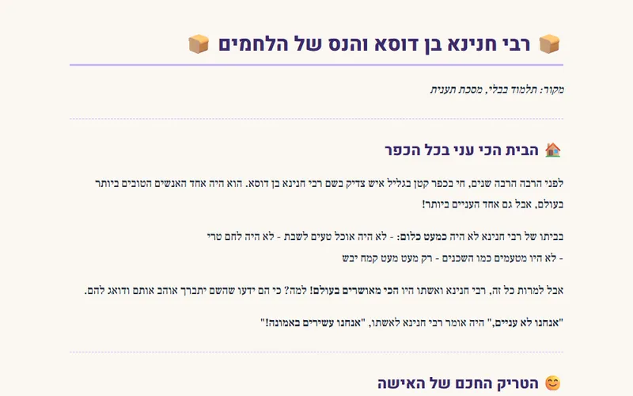
רבי חנינא בן דוסא והנס של הלחמים
מקור: תלמוד בבלי, מסכת תענית
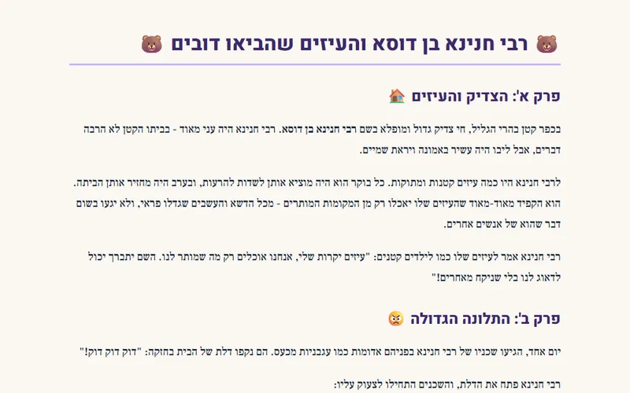
רבי חנינא בן דוסא והעיזים שהביאו דובים
בכפר קטן בהרי הגליל, חי צדיק גדול ומופלא בשם רבי חנינא בן דוסא. רבי חנינא היה עני מאוד - בביתו הקטן לא הרבה דב…
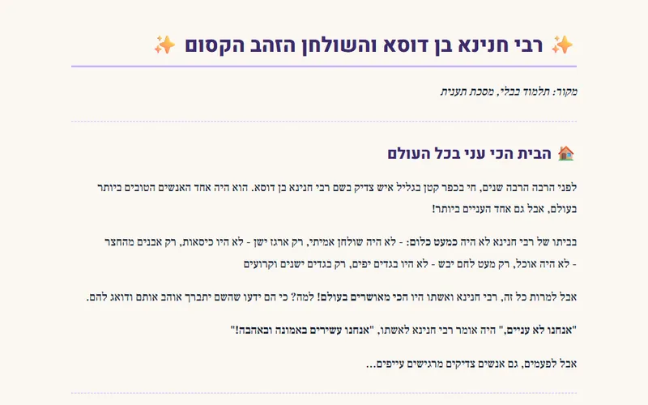
רבי חנינא בן דוסא והשולחן הזהב הקסום
מקור: תלמוד בבלי, מסכת תענית
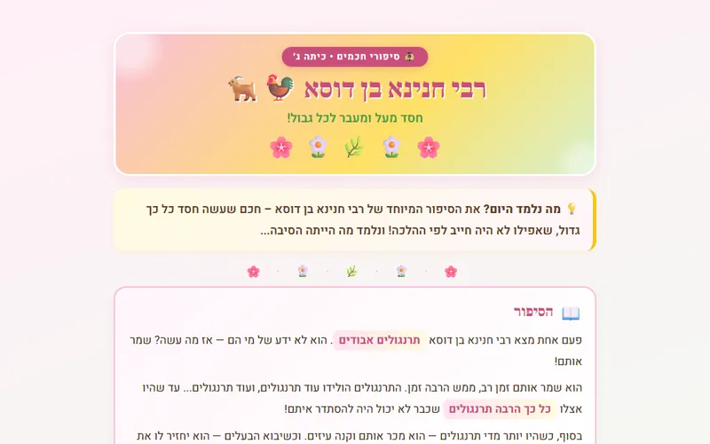
רבי חנינא בן דוסא – חסד מעל ומעבר
פעם אחת מצא רבי חנינא בן דוסא תרנגולים אבודים . הוא לא ידע של מי הם — אז מה עשה? שמר אותם!
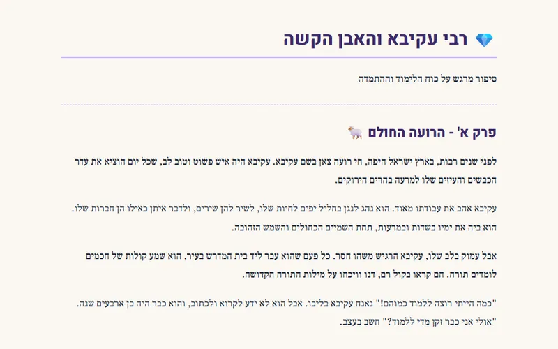
רבי עקיבא והאבן הקשה
סיפור מרגש על כוח הלימוד וההתמדה
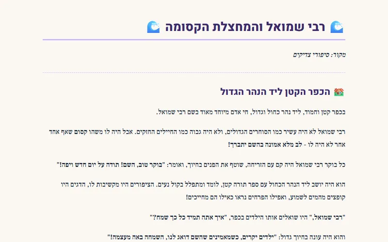
רבי שמואל והמחצלת הקסומה
מקור: סיפורי צדיקים
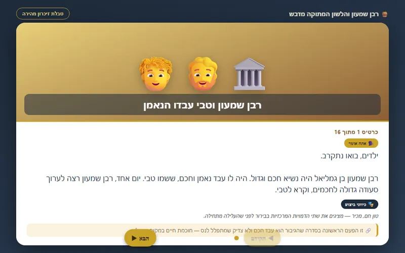
רבן שמעון והלשון המתוקה מדבש
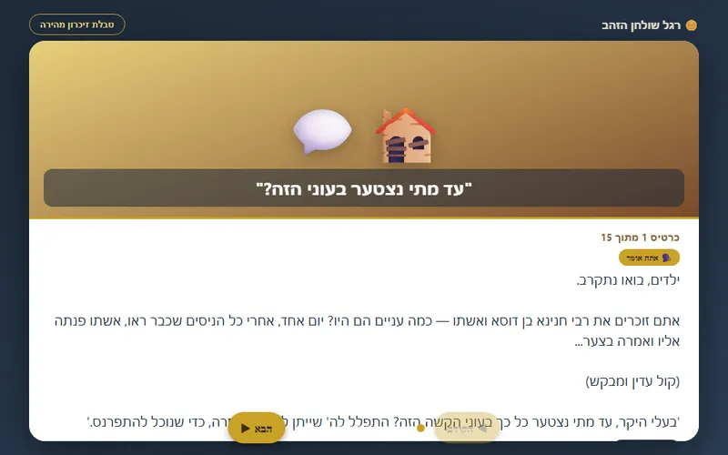
רגל שולחן הזהב
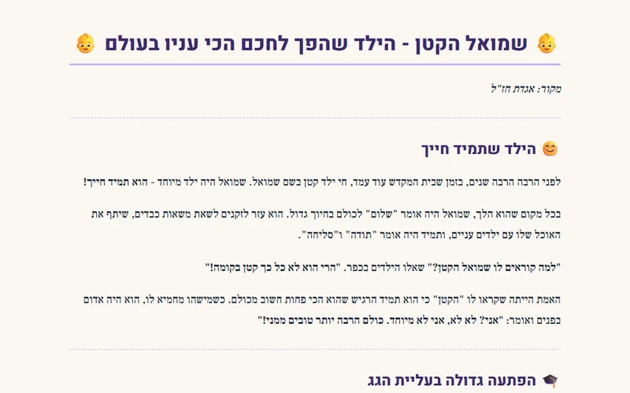
שמואל הקטן - הילד שהפך לחכם הכי עניו בעולם
מקור: אגדת חז"ל
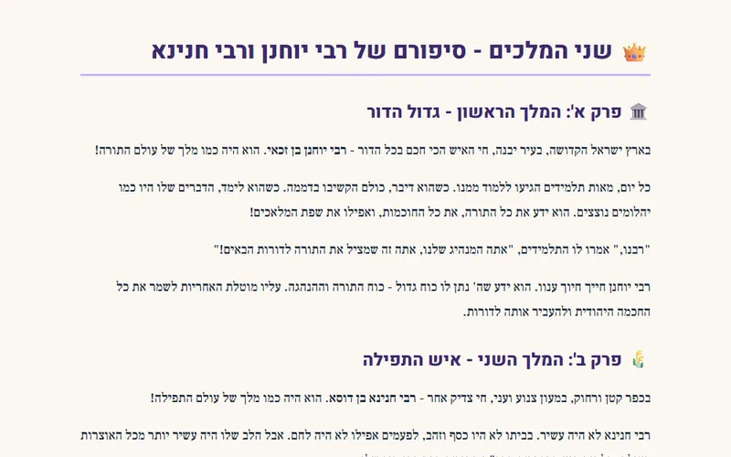
שני המלכים - סיפורם של רבי יוחנן ורבי חנינא
בארץ ישראל הקדושה, בעיר יבנה, חי האיש הכי חכם בכל הדור - רבי יוחנן בן זכאי. הוא היה כמו מלך של עולם התורה!
ספרי סיפורים – גדולי ישראל והתנאים (1)
📚 לקרוא סיפורים על הדורות המאוחרים יותר. ספר סיפורים כתובים על גדולי ישראל – מן הגאונים והראשונים ועד גדולי הדורות האחרונים.
סיפורי צדיקים ואמונה (25)
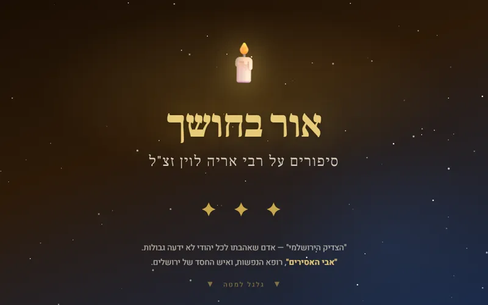
אור בחושך – סיפורים על רבי אריה לוין
הצדיק הירושלמי" — אדם שאהבתו לכל יהודי לא ידעה גבולות. "אבי האסירים" , רופא הנפשות, ואיש החסד של ירושלים.
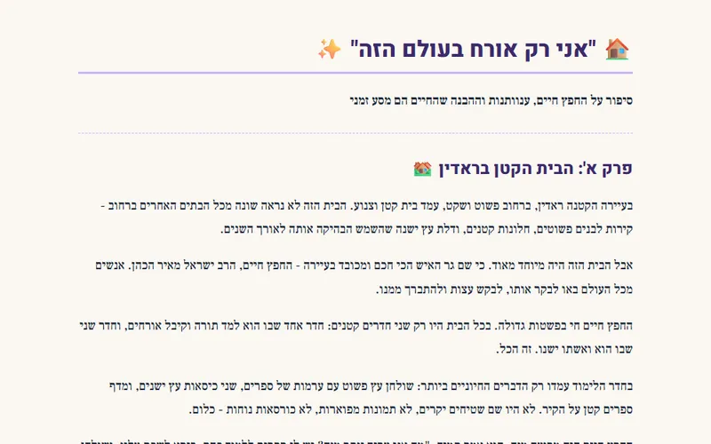
אני רק אורח בעולם הזה
סיפור על החפץ חיים, ענוותנות וההבנה שהחיים הם מסע זמני
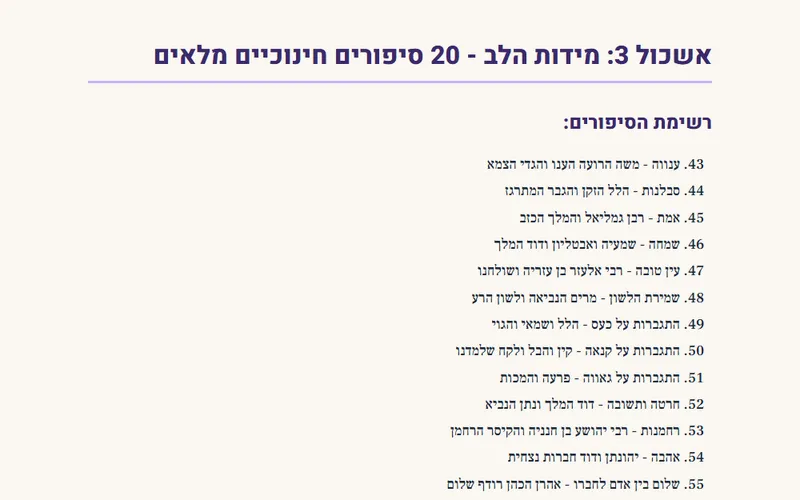
אשכול 3: מידות הלב - 20 סיפורים חינוכיים מלאים
רשימת הסיפורים: 43. ענווה - משה הרועה הענו והגדי הצמא 44. סבלנות - הלל הזקן והגבר המתרגז 45. אמת - רבן גמליאל …
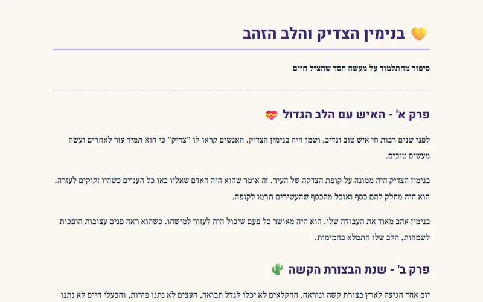
בנימין הצדיק והלב הזהב
סיפור מהתלמוד על מעשה חסד שהציל חיים
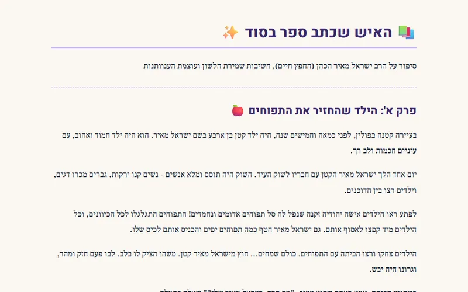
האיש שכתב ספר בסוד
סיפור על הרב ישראל מאיר הכהן (החפץ חיים), חשיבות שמירת הלשון ועוצמת הענוותנות
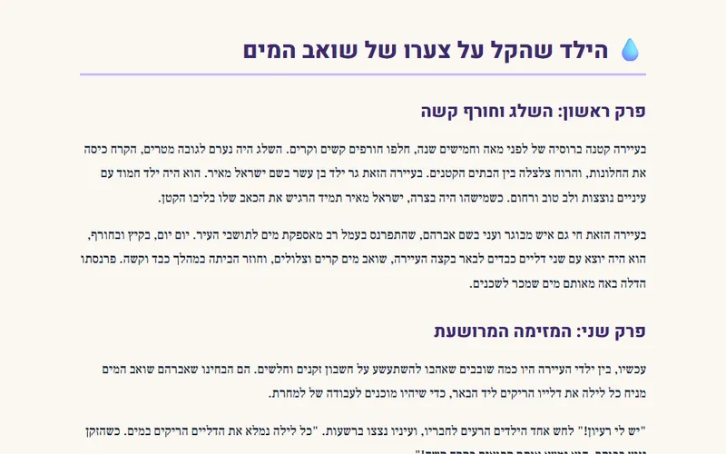
הילד שהקל על צערו של שואב המים
בעיירה קטנה ברוסיה של לפני מאה וחמישים שנה, חלפו חורפים קשים וקרים. השלג היה נערם לגובה מטרים, הקרח כיסה את הח…
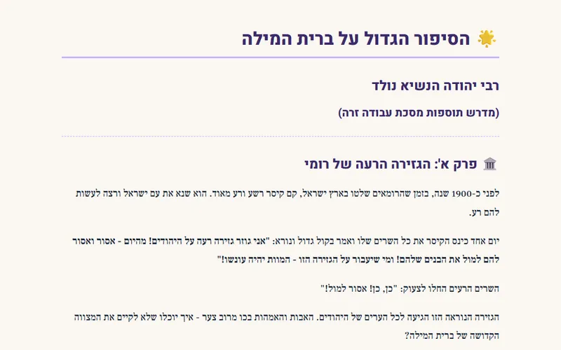
הסיפור הגדול על ברית המילה
רבי יהודה הנשיא נולד (מדרש תוספות מסכת עבודה זרה)
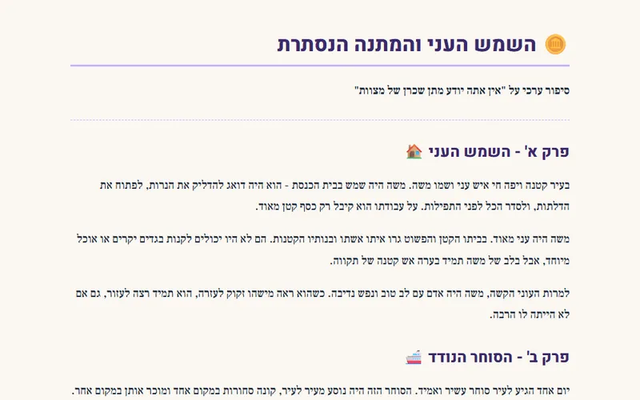
השמש העני והמתנה הנסתרת
סיפור ערכי על "אין אתה יודע מתן שכרן של מצוות"
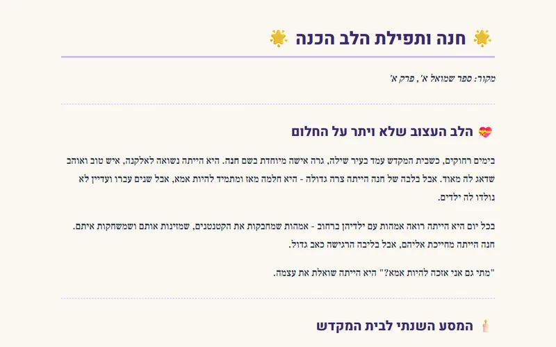
חנה ותפילת הלב הכנה
מקור: ספר שמואל א', פרק א'
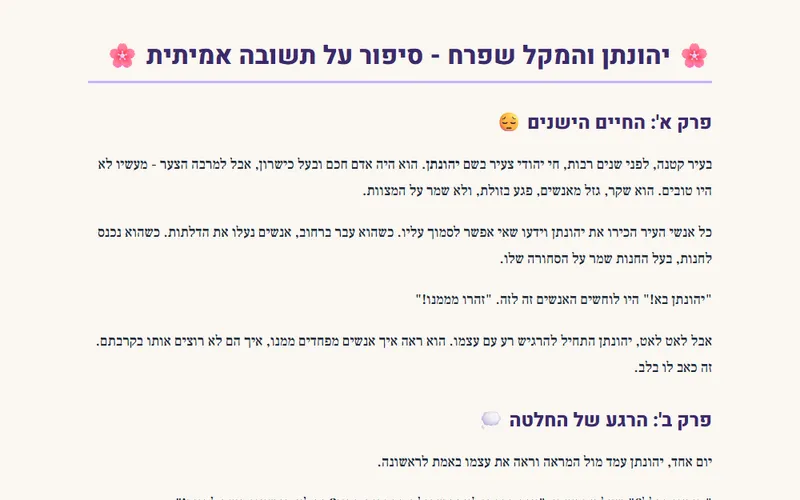
יהונתן והמקל שפרח - סיפור על תשובה אמיתית
בעיר קטנה, לפני שנים רבות, חי יהודי צעיר בשם יהונתן. הוא היה אדם חכם ובעל כישרון, אבל למרבה הצער - מעשיו לא הי…
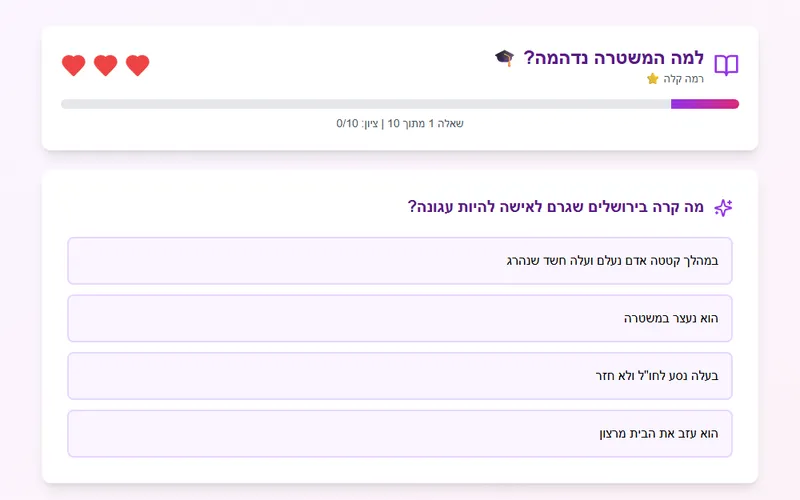
למה המשטרה נדהמה? – סיפור ומשחק על מרן הרב עובדיה
מדוע מרן התאמץ כל כך למצוא פתח להתיר עגונות?
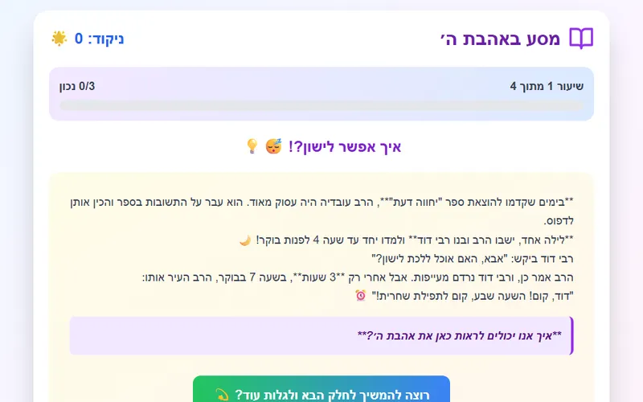
מסע באהבת ה׳ – סיפורי הרב עובדיה יוסף
, הרב עובדיה היה עסוק מאוד. הוא עבר על התשובות בספר והכין אותן לדפוס. **לילה אחד, ישבו הרב ובנו רבי דוד** ולמ…
מסע הנשמה עם מרן הרב עובדיה – משחק
כוח הזיכרון של מרן** מרן הרב עובדיה יוסף זצ
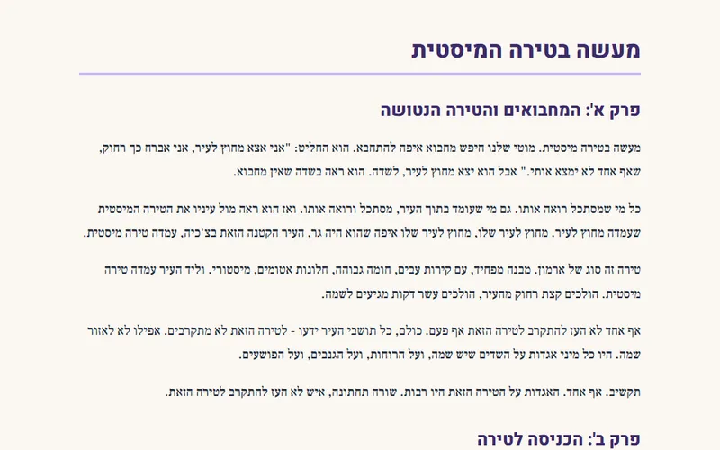
מעשה בטירה המיסטית
מעשה בטירה מיסטית. מוטי שלנו חיפש מחבוא איפה להתחבא. הוא החליט: "אני אצא מחוץ לעיר, אני אברח כך רחוק, שאף אחד …
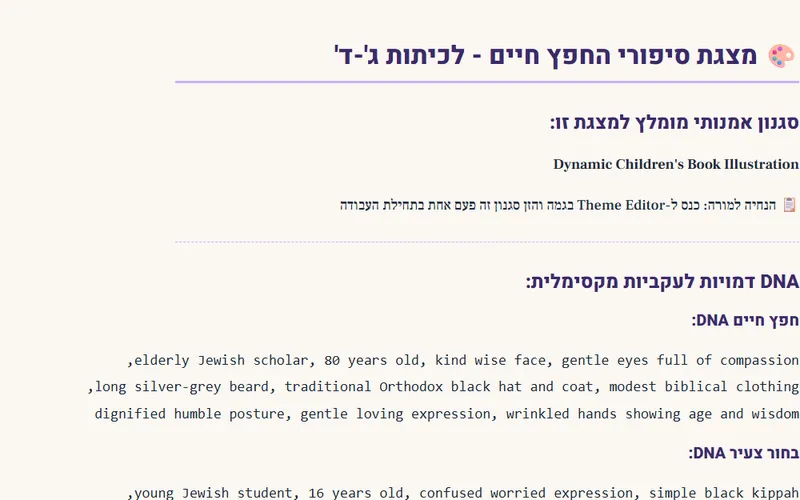
מצגת סיפורי החפץ חיים - לכיתות ג'-ד
סגנון אמנותי מומלץ למצגת זו: Dynamic Children's Book Illustration
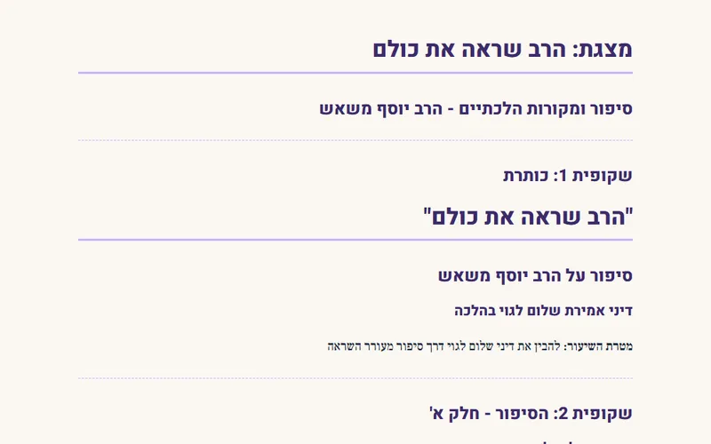
מצגת: הרב שראה את כולם
סיפור ומקורות הלכתיים - הרב יוסף משאש
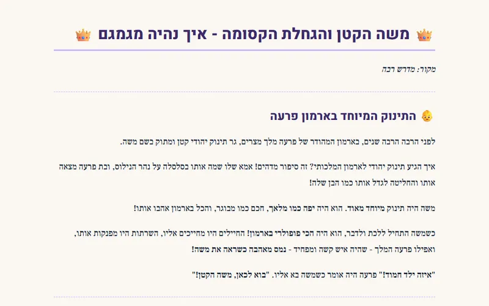
משה הקטן והגחלת הקסומה - איך נהיה מגמגם
מקור: מדרש רבה
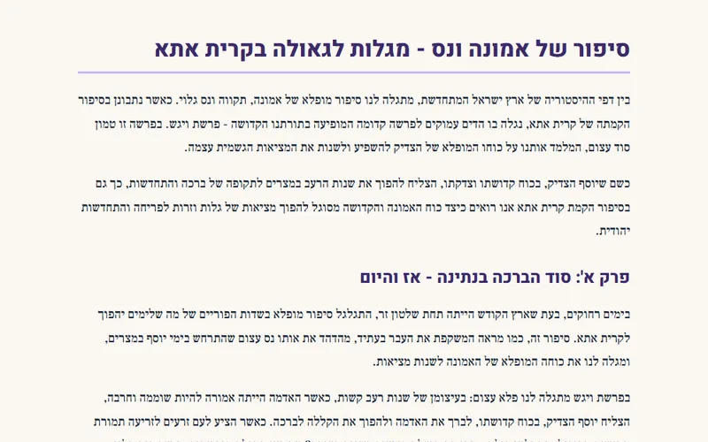
סיפור של אמונה ונס - מגלות לגאולה בקרית אתא
בין דפי ההיסטוריה של ארץ ישראל המתחדשת, מתגלה לנו סיפור מופלא של אמונה, תקווה ונס גלוי. כאשר נתבונן בסיפור הקמ…
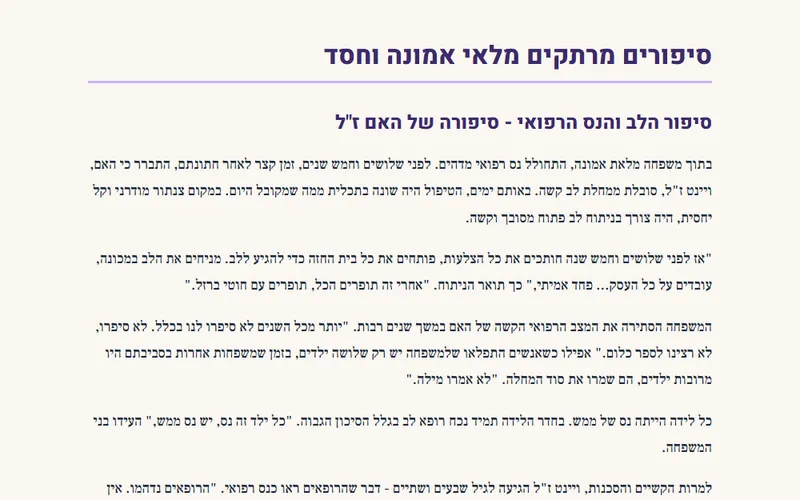
סיפורים מרתקים מלאי אמונה וחסד
סיפור הלב והנס הרפואי - סיפורה של האם ז"ל
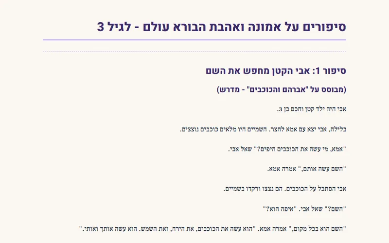
סיפורים על אמונה ואהבת הבורא עולם - לגיל 3
סיפור 1: אבי הקטן מחפש את השם (מבוסס על "אברהם והכוכבים" - מדרש)
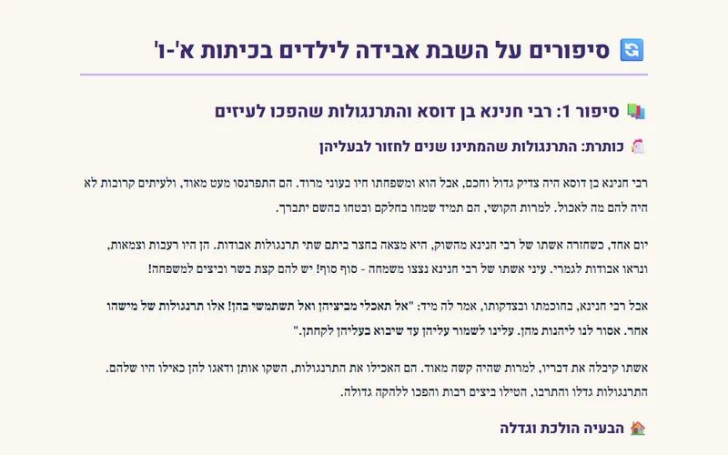
סיפורים על השבת אבידה לילדים בכיתות א'-ו
'
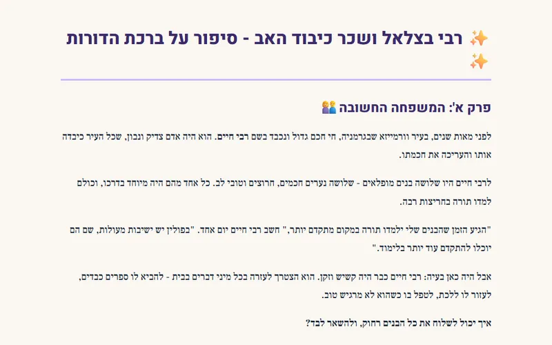
רבי בצלאל ושכר כיבוד האב - סיפור על ברכת הדורות
לפני מאות שנים, בעיר וורמייזא שבגרמניה, חי חכם גדול ונכבד בשם רבי חיים. הוא היה אדם צדיק ונבון, שכל העיר כיבדה…
שקידה בלילה - מרן ובתו
באיזו שעה שאלה הבת את אביה למה הוא לא הולך לישון?
סיפורי אמונה - מהחטופים מעזה
מחקר מקיף על סיפורי אמונה, חוסן רוחני ותופעות רוחניות בקרב חטופים ששוחררו מרצועת עזה לאחר 7 באוקטובר 2023 מב…
סיפור האמונה של אגם ברגר
דרך אמונה: 481 ימי החוסן הרוחני של אגם ברגר הקדמה: הלוח הלבן וההבטחה ביום ה-30 בינואר 2025, לאחר 481 ימים של ח…
סיפורים במצגת – אמונה וגבורה (12)
כי גבר עלינו חסדו
סוד החסה
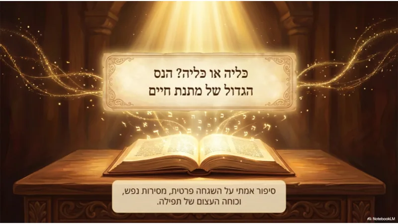
כליה או כליה
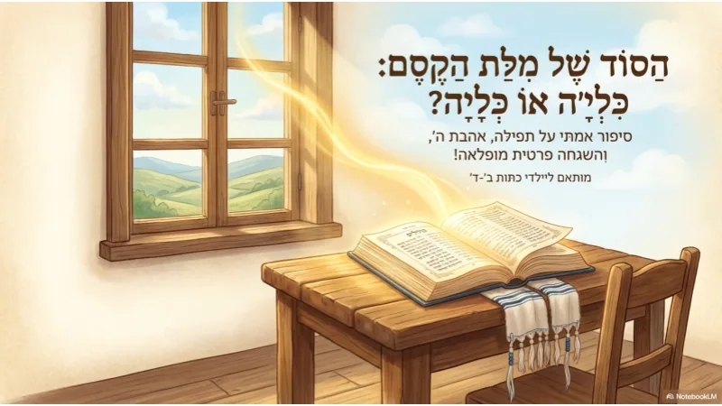
כליה או כליה - מעולה!
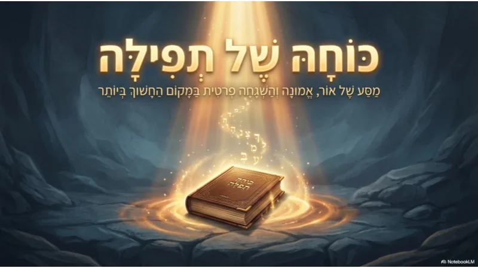
אגם ברגר
כוחה של שירה
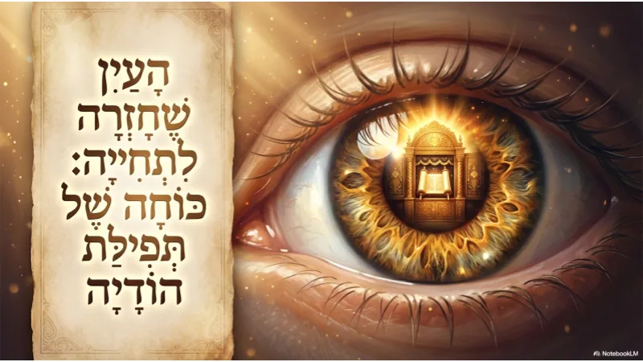
העין שחזרה לתחיה
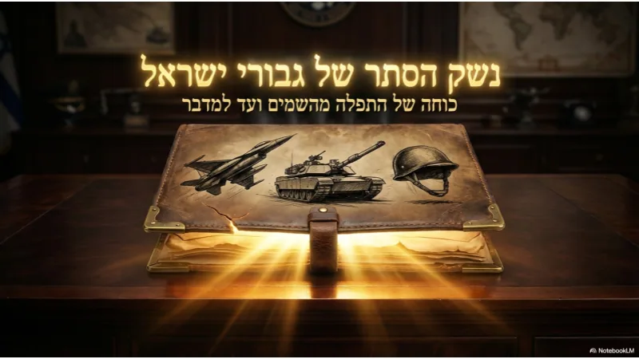
הנשק של הגיבורים
הסיפורים במלואם מעוצב
בדרך אמונה בחרתי
שיעור עמוק על עקרון הרב פרידלנדר: "כפי מידת האמונה כך מידת ההשגחה שאדם רואה" - איך לבחור לראות השגחה פרטית בכל…
גיבורים של עם ישראל
דף פעילות לכיתות ה'-ו'
דברים מהסבא של גפן אדרי
אין תפילה שחוזרת ריקם דברי חיזוק • אמונה • התעוררות אין תפילה שחוזרת ריקם עריכה ברורה ומסודרת מתוך התמליל – על…
שירים ומצגות על גדולי ישראל (3)
הכל לטובה – שיר מנוקד
שיר על סיפורי חכמים באמונה ובטחון: רבי עקיבא, נחום איש גם זו ועוד.
אָעוּפָה אֶשְׁכֹּנָה - פיוט של ר' יצחק אביחצירא
עד עכשיו המשורר דבר על הכסופים שלו להקדוש ברוך הוא. עכשיו - השם יתברך עונה לו! בואו נראה מה הוא אומר...
יוֹדוּ לְךָ רַעְיוֹנַי - ר' ישראל אבוחצירא
מאת הצדיק רבי ישראל אבוחצירא זצוק"ל הבבא סאלי
מדריך למורה – איך מספרים סיפור (1)

תולדות אדם – ביוגרפיות וכתיבתן (28)
הספד על הרב אליהו רוטנברג זצ"ל
על ידי ר' יהודה טאוב שיחי' - מאברכי הכולל בקרית אתא
הרב אליהו יצחק רוטנברג זצ"ל - סיפור חיים של מייסד עולם התורה בקרית אתא
יוסף רוטנברג ז"ל ולאמו מרת חיה ע"ה. המנוח היה מצאצאי הרה"ק בעל ה'תפארת שלמה' מראדמסק…
הרב אליהו רוטנברג זצ"ל
קינת קריית אתא - לזכר הרב אליהו רוטנברג זצ"ל
שיר זה נכתב באהבה ובכבוד לזכר נשמת הרב אליהו יצחק רוטנברג זצ"ל מיסד עולם התורה בקרית אתא
מחקר – תולדות אדם
מחקר
ניתוח ביוגרפי: הרב אליהו רוטנברג זצ"ל
האיש שבנה עולם של תורה מאת: הרב יהודה טאוב הצומת שבין מסלול חייו הייחודי של הרב אליהו רוטנברג זצ"ל לבין הוואקו…
הרב רוטנברג
האיש שבנה עולם | הרב אליהו רוטנברג זצ"ל האיש שבנה עולם סיפור חייו ומורשתו של הרב אליהו רוטנברג זצ"ל מאת: הרב י…
הרב מאיר שפריר
ז"ל זה ספר תולדות אדם ביוגרפיה של הרב מאיר שפריר ז"ל מאת: הרב יהודה טאוב פתיחה: "זֶה סֵפֶר תּוֹלְדֹת אָדָם" הפ…
תורת חיים: סיפורו של נתנאל טאוב ז"ל
תורת חיים סיפורו של נתנאל טאוב ז"ל מאת: הרב יהודה טאוב הקדמה: שירת הנפש בערב ראש השנה ערב ראש השנה האחרון לחיי…
עטרת משה: ממאקווא שבהונגריה לקרית אתא
▲ עטרת משה: ממאקווא שבהונגריה לקרית אתא סיפור של הנהגה, חורבן ותקומה מאת: הרב יהודה טאוב, קרית אתא 📖 פתח דבר: …
נגד כל הסיכויים: סיפור המאבק שהוליד את נעם
▲ נגד כל הסיכויים סיפור המאבק, האמונה ומסירות הנפש שהוליד את בית הספר "נעם" מאת: הרב יהודה טאוב הניצוץ שהצית א…
ה ספר תולדות נעם | ביוגרפיה של מאבק ומסירות נפש
זה ספר תולדות נעם ביוגרפיה של מאבק ומסירות נפש על טהרת החינוך מאת: הרב יהודה טאוב פתיחה: "זֶה סֵפֶר תּוֹלְדֹת …
סיפור הקמת מאקווא קרית אתא
מהאפר בהונגריה אל הלהבה בקריית אתא: סיפורו של האדמו"ר ממאקווא ▲ מהאפר בהונגריה אל הלהבה בקריית אתא סיפורו הבלת…
סיפורה של משפחת שפרבר
שרשרת של אמונה סיפורה של משפחת שפרבר מאת: הרב יהודה טאוב פרולוג: ערב החורבן התוף הולם. תחילה במרחק, ואז מתקרב,…
הרב גבריאל דנק ז"ל
הנשימה האחרונה, הספר הפתוח סיפורו הבלתי נשכח של הרב גבריאל דנק ז"ל מאת: הרב יהודה טאוב מבוא: הרגע שבו הזמן עצר…
סבתא רחל טאוב
הילדה שהביאה את האור | סיפורה של סבתא רחל הילדה שהביאה את האור סיפורה של סבתא רחל מאת: הרב יהודה טאוב ירושלים …
הרב גפן - קרית אתא
הדרשה האחרונה של הארי מכפר אתא ▲ הדרשה האחרונה של הארי מכפר אתא סיפור חייו, גבורתו ומותו הטרגי של רבי יהודה אר…
המייסד של כפר אתא
תעלומת המייסד הנשכח של כפר אתא ▲ תעלומת המייסד הנשכח של כפר אתא מי היה האיש הזה, ואיזה סוד הוא לקח איתו אל הצל…
הרב יהודה פולק
בנימין אסולין
אור בנימין - אור טהור ונאור 💡 אוֹר בִּנְיָמִין אוֹר טָהוֹר וְנָאוֹר מֵעֹז הָרוּחַ, מֵחֶסֶד וּמֵאֱמוּנָה שִׁיר …
כתיבת תולדות הורים | חקירה פסיכולוגית וביוגרפית
כתיבת תולדות הורים חקירה פסיכולוגית, נרטיבית וביוגרפית מאת: הרב יהודה טאוב 1. הגדרות יסוד: סיפור, זהות ומורשת …
המצווה לכתוב ספר על נפטרים
זה ספר תולדות אדם | הרב יהודה טאוב זה ספר תולדות אדם מדוע וכיצד נכתוב את סיפור חייהם של הורינו מאת: הרב יהודה …
כיצד לכתוב ביוגרפיה
על נפטר באמת וביושר מאת: הרב יהודה טאוב מבוא: "זה ספר תולדות אדם" – מהותה של הביוגרפיה על פי התורה כתיבת תולדו…
כתיבת תולדות ההורים: חובה, משמעות והדרכה
כתיבת תולדות ההורים חובה, משמעות והדרכה מאת: הרב יהודה טאוב כדי לקיים דיון מעמיק ושיטתי בנושא כה רגיש ורב-ממדי…
חשיבות כתיבת תולדות הוריו
כתיבת תולדות הורים | חשיבות ומשמעות כתיבת תולדות הוריו של אדם חשיבות וקשר למצוות ההספד מאת: הרב יהודה טאוב א. …
חשיבות כתיבת תולדות ההורים בראי המקורות
חקירה מקיפה: חשיבות כתיבת תולדות ההורים בראי המקורות מסמך יסוד להבנת הערך הרוחני והחינוכי שבתיעוד המשפחתי מאת:…
אמנות הכתיבה: ביוגרפיה על נפטר
אמת, יושר וגבולות המוסר מאת: הרב יהודה טאוב פרק I: מבוא – הביוגרפיה של המת כ'חסד של אמת' 1.1. הגדרה פילוסופית …
כוחו ומעלתו של ההספד
כוחו של ההספד | חקירה מקיפה על פי המקורות כוחו של ההספד: חקירה מקיפה מדוע יש מצווה גדולה להספיד אדם לאחר מותו?…